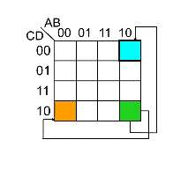

Logic Gates, Circuits and Truth tables
An Alternative view of the OR circuit
Why is \(\bar f = \bar A \cdot \bar B\) an appropriate representation?
We know that \(\bar f = \overline {A+B}\), this means \(f = A+B\). Therefore, \(\bar f = \bar A \cdot \bar B\) (de Morgan’s Law)
Functions of Two Binary Variables
16 (24) functions can be found between two binary variables. We can interpret each of these functions algebraically.
| A | B | \(f_0\) | \(f_1\) | \(\cdots\) | \(f_{14}\) | \(f_{15}\) |
|---|---|---|---|---|---|---|
| 0 | 0 | 0 | 0 | \(\cdots\) | 1 | 1 |
| 0 | 1 | 0 | 0 | \(\cdots\) | 1 | 1 |
| 1 | 0 | 0 | 0 | \(\cdots\) | 1 | 1 |
| 1 | 1 | 0 | 1 | \(\cdots\) | 0 | 1 |
Electronic Logic Gates
There are 7 electronic logic gates whose function you should understand.

AND, OR, NOT are termed the fundamental gates because they can be used to build any of the functions that you see in the table above – meaning that they can also be used to build a circuit that fulfils the functions of the other gates you see below (NAND, NOR etc.).
Aside from the fundamental gates, the NAND and NOR gates which are termed the universal gates are important to understand as well because using either multiple NAND gates or multiple NOR gates we can build each fundamental gate. You either need NAND or NOR, you don’t need the other.
Additionally, while the EX-OR gate is not one of the fundamental or universal gates it is very useful as well.
\[f = A \oplus B = \bar A \cdot B + A \cdot \bar B\]Simplifying Logical Expressions using Boolean Algebra
The motivation for simplifying logical expressions is economic. When producing microprocessors, we usually want to optimise (minimise) the amount of materials we use to reduce cost – which mean to use a minimum amount of silicon and other resources. Therefore, as much as possible, we will want to reduce the number of logic gates that we require for a particular circuit.
This leads us to the idea of circuit equivalence where a Boolean function can have many different but equivalent Boolean expressions, and therefore different combinations of logic gates. What’s important is that given a function we are able to create equivalent circuits that:
- Perform the designated function
- Use the types of gates available (these are usually dependent on the physical implementation e.g. only want to use NAND gates or maybe we have some 4-input gates etc.)
- Minimise the number of gates used and hence cost.
There are two crucial skills to have:
Logic Circuit to Truth Table

Truth table to Boolean Equation

Laws of Boolean Algebra
In an exam, it is crucial that you state which rules you are applying so that what you are doing is clear to the marker.
| Name | Conjunction (“and” form) | Disjunction (“or” form) |
|---|---|---|
| Identity | \(x \cdot 1 \equiv x\) | \(x + 0 \equiv x\) |
| Null | \(x \cdot 0 \equiv 0\) | \(x + 1 \equiv 1\) |
| Negation | \(\overline{\overline{x}} \equiv x\) | \(\overline{\overline{x}} \equiv x\) |
| Idempotence | \(x \cdot x \equiv x\) | \(x + x \equiv x\) |
| Inverse (AKA: Excluded Middle) | \(x \cdot \overline{x} \equiv 0\) | \(x + \overline{x} \equiv 1\) |
| Commutativity | \(x \cdot y \equiv y \cdot x\) | \(x + y \equiv y + x\) |
| Associativity | \((x \cdot y) \cdot z \equiv x \cdot (y \cdot z)\) | \((x + y) + z \equiv x + (y + z)\) |
| Distributivity | \(x + (y \cdot z) \equiv (x + y) \cdot (x + z)\) | \(x \cdot (y + z) \equiv (x \cdot y) + (x \cdot z)\) |
| Absorption | \(x \cdot (x + y) \equiv x\) | \(x + (x \cdot y) \equiv x\) |
| De Morgan’s | \(\overline{(x \cdot y)} \equiv \overline{x} + \overline{y}\) | \(\overline{(x + y)} \equiv \overline{x} \cdot \overline{y}\) |
The best way to get good at this is to practise.
Karnaugh Maps / K-maps
Using Boolean algebra, it can be difficult to tell whether an equation is in its simplest form or to see the next step to simplifying it. K-maps show unambiguously when a Boolean expression is in its simplest form.
Grey Coding. Because sum of products can be simplified by looking for terms that differ by only one variable and its complement, when we draw out a kmap we have to grey code – which mean each cell only differs by 1 variable from its neighbours (horizontally and vertically) as you can see below.

Karnaugh Map Grouping. The first step to finding the simplest expression is to form K-map groupings. There are some things/rules/features to note about this.
- Wrap-around is valid. This means the left most-column is adjacent to the right most-column, and the top row is adjacent to the bottom row. So the orange and green cells, and the blue and green cells are adjacent.
- Groupings can overlap. The cells don’t have to exclusively be in just 1 group.
- The minimum logic expression is obtained on minimum number of groupings.
- Number of elements in the group must be a power of two 1,2,4,8 etc..

The second and last step is to look within a particular group and omit the case/variable that changes from the group’s logic expression and include those that stayed constant. This is because those that change are not definitional to the group’s logical expression.
The values of the cases/variables that stayed constant depend on the value within the grouping. In the example below B changes within the blue group so it is omitted, and both A and C stayed constant with value 0 so the final logic expression for the blue group is \(\overline{A} \cdot \overline{C}\).
Multiple equivalent expressions
In the exams, there will be no penalty if you give either answer but note that in reality sometimes the final choice comes down to the resources you have available like the number of NOT gates that you can use.
Additionally, there are some expressions that are impossible to simplify. This example is just one of the very few logical expression that you cannot simplify because you cannot get any groupings more than 1.

Don’t Care Conditions
Sometimes a certain combination of inputs either can’t happen or we don’t care what the output is if it happens. We denote this with a ❌ in our K-maps which may be assumed to be either 1 or 0 — we don’t care.
These can allow us to create a simpler logic expression. If you take a look at the left K-map, you can see that there’s an outstanding 1 just below the ❌, and there are multiple ways we can choose to group it. If we do it like in the right K-map, you can see that we arrive at a slightly simpler logic expression – and the only reason we can group it that way is because the 01-00 cell is a don’t care condition.

Combinatorial Logic Circuits
A logic circuit whose output is a logical function of its input(s).
Perform as fast as your gates.
1-bit Half-Adder
This circuit performs the addition of two bits, and can be extended to form a 1-bit full-adder. What’s important is that you recognise that the truth table for sum represents that of an EX-OR gate, while the carry represents that of an AND gate.
This is important because to derive the layout of the circuit, you can start from thinking about what you want to achieve first, i.e the addition of two bits. The truth table essentially describes this function and from there you can think about which gates you have to use and how they should be arranged according to the 1s and 0s in the truth table.
1-bit Full-Adder
A 1-bit full adder is capable of adding two bits (A and B) and considering a carryin from another 1-bit full adder, to produce an output sum and a carryout.


To design a circuit of a 1-bit full adder it is helpful to think about the logic gates needed based on the truth table above. Pay attention to how the value of Cout and S relate to Cin, A, and B and try to think of the logic gates needed to emulate this behaviour/function.
It is highly suggested that you try this on your own before clicking to see my own attempt – and also take mine with a pinch of salt and tell me if you think I’m wrong or can be better!
My design of a 1-bit Full-Adder
Looking at the truth table shown earlier, I realised that $$Sum = (A \oplus B) \oplus C_{in} \\ C_{out} = A \cdot B + C_{in} \cdot (A \oplus B)$$ With these two logic expressions, I was able to decide which logic gates to use to arrive at my final design for the full adder.

N-bit Full-Adder
Once we know how to design a 1-bit Full Adder (FA) we will be able to build a n-bit full adder which we can use to add 2 n-bit words (A and B) together. We do this by assigning each bit of A and B to each FA, and just like how we do long division we add each bit together, starting from the LSB (where the carry in is obviously 0) and then taking the carry of each FA and feeding it to the next FA until you reach the nth FA.
The output of each sum (Sk) and the final Cout is then “dealt with” to arrive at the sum of A and B. It is important to consider how you would “deal” with all these bits, and also important to note that if Cout is 1 then it means you have an overflow.

Adder to Adder/Subtractor
To convert an adder into an adder/subtractor we simply add a control input Z such that:
\[Z = 0 \Rightarrow S = A + B \\ Z = 1 \Rightarrow S = A + (-B)\]Recall. We calculate –B using two’s complement
- Invert the N-bit binary number B with Z ⊕ B
- Add 1 (Carry In)
N-bit Adder/Subtractor
You can see that Z is fed as the Cin of the first FA, this has the effect of adding 1 to arrive at the proper value for the two’s complement B. From above, Z is EX-ORed with each bit of B and this has the effect of inverting the bits to get -B. When we are adding, then Z will be 0 and will have no effect on B.

Remember because the numbers are in two’s complement form, the final Cout should be ignored in the calculation. However, it is significant in the “Assembler” topic because the Cout goes to your Condition Code Register (CCR) as the Carry Flag.
FYI. If the value of Cout is different from the carry going into the last FA (the carry from the 2nd last FA), there is an overflow. You can read more about it here or wikipedia.
Active High or Active Low?
Transistor-transistor logic floats high – meaning that if you don’t connect it to anything, its value is a logical 1. Hence, it is helpful for 0 to be the active state so that you are not accidentally enabling circuits.
In some circuit applications, outputs and inputs have active and inactive states (you’ll see more of this in Three State Logic) and it is important that your input(s) and output(s) conform to the same standard.
- Active high. 0 is inactive and 1 is active.
- Active low. 0 is active and 1 is inactive. This is sometimes indicated with Enable – so if you see this bar it means that particular input/output is active low.
Decoders
A decoder has k input pins and 2k output pins. This is because with k inputs can have 2k possible states/combinations and can represent the same number of output values.
Decoders are often used to address unique memory locations in a microprocessor system.
Here we have an example of a truth table for an active low decoder on the left. Notice that the distinct value of each Yi is 0, which makes sense that because we only want 1 possible output to be active for a particular input state. The truth table for an active high decoder is on the right (notice how the Yi bits are all flipped compared to active low).


Encoder
The opposite of a decoder, where you take multiple input values and you define it in a more concise representation. Here you have 2k input(s) and k outputs. However, unlike the decoder where the inputs take all possible states, only one of the input pins should be active at a time.
Encoders usually used in communication because it is more efficient and succinct to send a compressed representation of certain values. Often used as simple input circuits.
Multiplexers (MUX)
A very common mechanism for selection.

Common Applications of Multiplexers.
Source selection control - Home stereo, e.g: send iPod, CD or radio to speakers - note that this is analogue not digital
Share one communication line between multiple senders - Requires both MUX and DE-MUX
Parallel to serial conversion - Parallel input on X, clock signal on S, serial output on Y
Circuit that can be configured to produce any truth table relationship between S inputs and Y outputs - Set up the truth table required on X inputs.
De-Multiplexers (DE-MUX)

Common Applications of De-Multiplexers.
Share one communication line between multiple senders – Requires both MUX and DE-MUX
Series to parallel conversion
A control for multiple lights – In a gambling machine you might connect a processor to A and S and connect Y outputs to lights, such that the processor runs in a rapid loop addressing each light sequentially.
Sequential Logic Circuits
A logic circuit whose outputs are logical functions of its input(s) and its current state.

Flip-Flops
A basic building block of memory. Level triggered devices (a device that responds to 1s and 0s) that are stable in only two states (bistable – Q and P are always opposite). I think the best way to understand the flip-flop is to look at the truth table and the timing diagram together.


- Note that Q and P are always different values as long as R and S are not active (0 because they RS are active low) at the same time.
- Next, see how Q starts off active in the diagram, and changes from 1 to 0 when R changes from 1 to 0? I think it’s better to think of this as Q is reset when R is activated (or R resets Q).
- Then also notice how when R is made inactive (goes back to 1), the value of Q and P don’t change. This is how the flip-flop is able to store a value when both S and R are inactive.
- S is activated, and Q is set to 1, while P resets to 0.
- Again, when S is deactivated, the value of P and Q don’t change. Only if R is activated again, do the values of P and Q flip.
- Now that you have understood that, you can look at the circuit diagram and see how and why having both S and R set to 0 leads to both Q and P to be 1 which violates the rule of the flip-flop as a bistable (P should be equal to Q) and is a hazard condition.
D-Type Latch
The first two NAND gates and the NOT gate ensure that the intermediate values just before the orange section can never both be 0 so we won’t have the hazard condition.

When we want to store data, we have that data at D, and we set Enable to 1 (or trigger the “latch”). Only then will the data from D go to Q. Otherwise, you can see from the truth table that Q and Q don’t change and behaves like memory.
The D-type is a fundamental component, so you should know how to draw it and understand its function. You should also understand how the D-type works with registers, shift registers, and counters.
The D-type latch (delay) is a type of clocked flip-flop and there are others like the T-type (toggle) and the JK-type. Clocking and enabling are used fairly interchangeably but the right term is clock. All the “latches” above changes only on the rising edge of the clock input, they only respond to change.
Three different kinds of triggers
Level triggered - 1s and 0s
Rising edge triggered - transition from 0 to 1
Falling edge triggered - from 1 to 0
N-bit Register
The diagram shown below, is a parallel-load register, each bit of A is fed to a D-type latch as input and we are storing each bit of A in the corresponding “memory location” of Q.
When we provide a clock pulse, we are providing the transition from a 0 to a 1 and 1 to 0 probably afterwards. The D type will only respond to the 0 to 1, when that happens, each bit of A fed into each D type will go to each Q. No change will happen to Q unless we clock it again. This is how we can store data and the stored number appears on the outputs of Q.

Note that this diagram is incomplete – you should always label the D & Clk inputs, and the Q & Q outputs in an exam.
An alternative design is…
N-bit Shift Register
The concept here is largely the same as the parallel-load register but is fed serially. This register stores one bit of a word/number A at time (starting from LSB of A) and shifts each prior bit to the next Q on the subsequent clocks until we clock the MSB of A into QN-1.

Usually used for serial to parallel conversion, because after feeding all N bits of A into the register each bit can be read in parallel from Q.
Once you’ve understood all the parallel and shift register…
N-bit Counter
You need to know how to explain this.
Let’s run through the values of the counter. Note that the circles on the flip-flops aside from the first one indicate an inverter, which mean that those flip-flops are clocked only on the falling edge of the previous output.
- Assuming all Qs start at 0. That means that the value of Q is 1 and that is fed to D. On the rising edge of the clock (low to high), Q0 changes from 0 to 1. So now the value stored is
1000. - On the next clock, Q0 changes from 1 to 0, thereby also clocking the 2nd D-type which gives Q1 the value 1 from 0. Now the value stored is
0100. - On the next clock, Q0 goes from 0 to 1, and Q1 doesn’t change because the Q0 just transitioned from low to high.
Since the value of each Qi represents a particular power of 2, notably 2i, when the counter is clocked…
- If Q0 (which represents 20 = 1) is 0, it changes to 1 thereby increasing the count by 1.
- If Q0 is 1, then it changes from 1 to 0, supplying a falling edge clock to the next D-type which changes the value stored at Q1.
- Now we can repeat the same condition for Q1 as it was for Q0 and hence for every Qi.
Because the Q of each falling edge clocked D-type will only change from 0 to 1 when the output Q of the prior D-type changes from 1 to 0, this also means that the Q of all prior D-types until Q0 changed from 1 to 0.
This emulates counting because each clock directly affects the first D-type only, and when all the bits of Q so far are not enough to represent the value of the next count, the clock would change Q0 from 1 to 0 and the falling edge clocking mechanism of the subsequent D-types will trigger, changing each Q from 1 to 0 until the first Qi that is 0 (not 1). Essentially, the counter switches to a higher power of 2 when it needs to.
So the output of the counter on each clock will look like..
0000
1000
0100
1100...
Three State Logic & Physical Implementations
In some logic components, termed a three-state buffer, whose output can be in three states: 1,0, or UNCONNECTED. Looking at the diagram below, when B is high the buffer is unconnected and vice versa. It can be thought of as a switch.

This is useful because we can provide communications between logical subsystems in an efficient way by sharing communication paths (buses). The buffers that share a common bus cannot be active at the same time!
Without three-state buffers, if you connect two outputs together you could be connecting a 1 to a 0 and cause a short circuit.
Propagation Delay
In practice, logic gates have propagation delay, typically 1x10-9s or less. These delays limit the speed at which logic circuits work. While propagation delay can be reduced by putting logic gates close together, ultimately the design of your circuits play a big part as well. You can think of propagation delay as the collective operating speed of the circuit.
We’re usually interested in the maximum propagation delay and we do this to make sure that our circuit doesn’t cross the so-called “event horizon” where the change in the input is not registered by the output for a relatively significant amount of time because of propagation delay. If another component relies on this output and another input, this may cause some problems especially for systems that have to respond quickly.
Logic Integrated Circuits (ICs)
Programmable logic devices allow much larger circuits to be created inside a single chip.
- Programmable Array Logic (PAL) - The first popular programmable device was one-time programmable
- Programmable Logic Array (PLA) - Device contains an AND array, which feeds an OR array, providing a physical implementation of a sum of products.
- Field Programmable Gate Array (FPGA) - One of several modern possibilities, which can contain million of gates - enough for an entire processor.
PLA
Works by providing links/fuses that can be broken to produce a custom sum of products. As long as you are able to understand circuit diagrams you should be able to understand how you arrive at the sum of products for each output of the PLA.